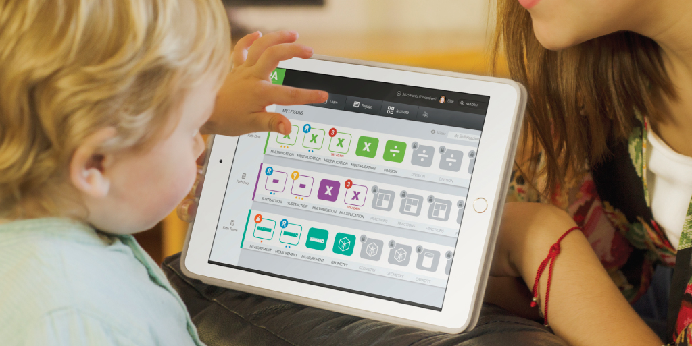
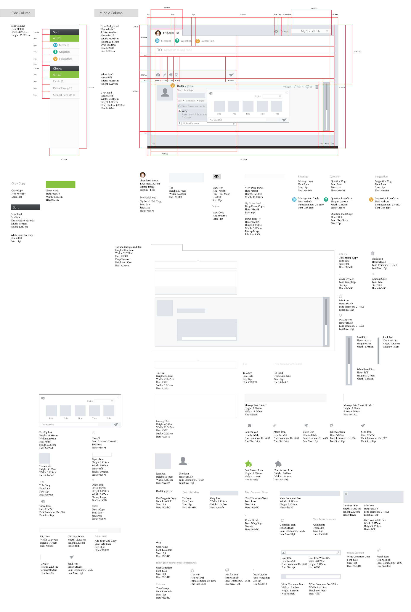

LoveMath™ Application

Overview
Great Parents Academy’s mission is to inspire children to learn by empowering and uniting parents, educators and community partners. LoveMath™ is a their web-based math application sold to parents that combines evidenced-based learning approach to math, a private and secure social network network platform, and parental and commercial motivational rewards for academic achievement.
I interned in this company as a UX designer from Aug. 2013 - Dec. 2013. During my internship, my responsibility was to design the onboarding and profile management experience for parents ,and social engagement experience for children.
Research
In the first month, I helped the user researcher conduct interviews with parents to understand pain points, needs, attitude, and factors that will ensure an enjoyable user experience and influence adoption and loyalty to the learning product.
We defined user segments to help us design interview script and later on used to construct personas.
Based on the user segments, we came up the interview questions:
What is the path your child has taken thus far in elementary school?Always lived in the same district?Any school changes?
Verifying the user type
Are you happy with your child's progress in school?
Do they think it is average, above or below? Is the potential met?
What is your child's learning style? visual, conceptual, verbally?
Do they find this concept interesting? Do they pay attention to this?
What kind of learning activity gets your child excited?
Is it reward or is it format?
How much time do you spend discussing concepts for learning opportunities? Homework verses nonhomework time?
Do they have a home culture of learning or is it thought of as a place for only school?
What are the places where your child is on level, or are there some gaps?
See if they have any transparency into what level is, how does the parent know what level their child is on?
What communication (if any) do you receive from your child's school regarding academic progress/concern?
Do they feel it is sufficient? What would they change?
What activities get your child engaged?
After interviewing 12 parents, we summarized the key findings and generated personas based on the findings:
Design
I did the content modeling with the business team. And based on the information architecute, I designed the onboarding and profile flow.
In the research, some of the key findings we found are:
Parents want to suggest and share recommendations. For example, sharing videos with kids in person and remotely.
Parents want to know their children are safe using online tools and that information about them is secure.
Some parents go “above and beyond” to supplement beyond what is offered by the school system. This includes extensive research to identify and provide more learning resources to match children’s enthusiasms and learning styles.
In the design of social hub, I was trying to keep information transparent to engage as many as parents, school teachers in the process of helping child solve math problems, and made sharing and recommendation education resource easy, and also gave parents full control of children's social circle.
Ship
In the last two months, I was working closely with the engineering team to ship social hub flow. Initially we provided a detailed spec for them to follow.

The engineering team is lacking UI engineer resource to focus on styling. I showed my interest in less, and angularJS. Luckily, they invited me to their agile planning and let me contribute to the code base. I was very proud to be able to excute my own design and helped the team meet the release date.
What I learnt
One of Great Parents Academy's co-funder is an experienced design researcher, and she has done an amazing job to build an awesome design team, and led the product designed based on profound usere research. I recieved a lot of design mentorship in this internship.
I learnt how to come up research plan(defining user segments, and designing interivew scripts), and how to collaborate with business team to balance user needs and business matrix in the information architecture design. I got a lot of great critique in interaction and visual design. And I gained tons of knowledge about UI development. This experience let me develop a mindset how to design within technical constrains, and I felt this capability has given me a lot of advantages to form a healthy developer relationship in shipping product process.